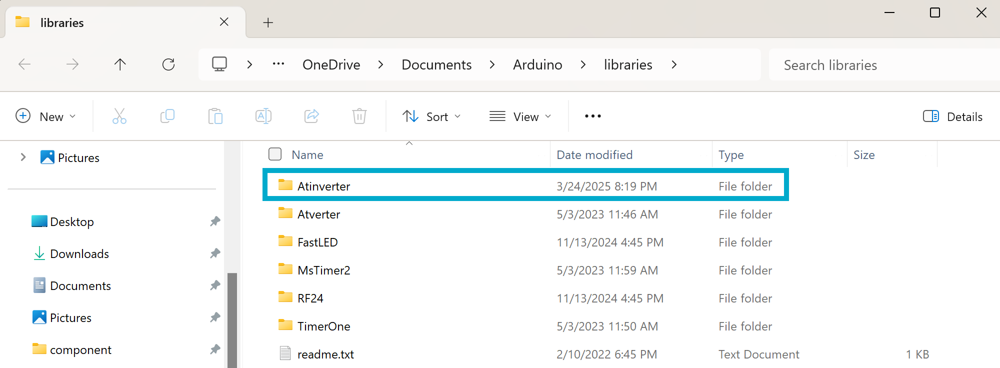

Atinverter Library Set Up
A guide to help your Arduino IDE recognize and use the Atinverter user-defined library
You might be thinking:
💭 “Okay, I downloaded the software files from the GitHub repository — now what? Can I just open some random file like
blink.inoand run the code?”
You’re almost there! There is just one important step that needs to happen first; We need ensure that the Arduino IDE knows where to find the Atinverter library files (Atinverter.cpp, Atinverter.h), or else you’ll run into the notorious:
fatal error: Atinverter.h: No such file or directory
📁 How Arduino Handles Libraries
The Arduino IDE looks for user-defined libraries in a specific directory on your computer. Simply placing .cpp or .h files in the same directory as the .ino files you wish to run isn’t enough.
Here’s where those locations are:
🔍 If you’re on Windows, it’ll be in:
C:\Users<YourUsername>\Documents\Arduino\libraries\
🔍 If you’re on macOS or Linux, it’ll be in:
~/Documents/Arduino/libraries/
✅ What To Do
-
Navigate to the
Atinverterlibrary folder in the repository. It contains the source filesAtinverter.cpp,Atinverter.h, and the metadata filelibrary.properties. It is located in:\AtInverter\software\Library -
Copy the
Atinverterfolder to your Arduinolibrariesfolder as described in
How Arduino Handles Libraries
📸 You should expect to see something like this in your Arduino libraries folder:

🚀 You’re Good to Go
Once the Atinverter library is in the right place, you can use it any sketch with:
#include "Atinverter.h"